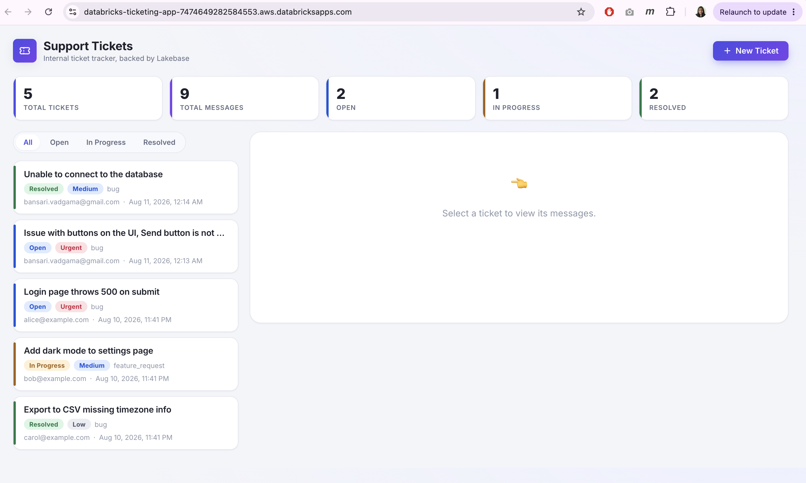
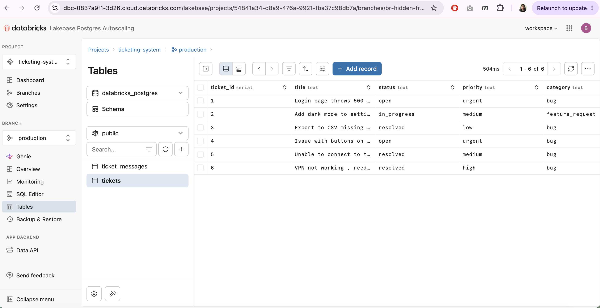
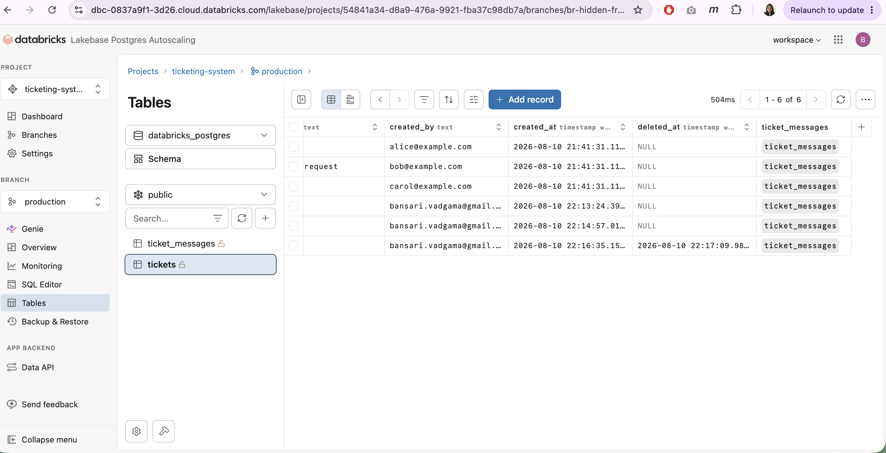
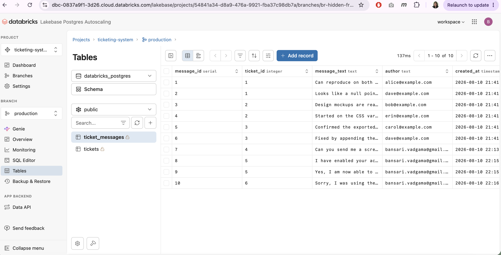
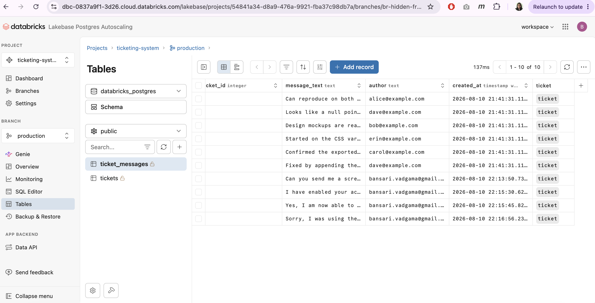

Homework Submission — Lakebase-Powered Ticketing System
1. Databricks App URL
https://databricks-ticketing-app-7474649282584553.aws.databricksapps.com
2. Source code
Zipped from the project root (ticketing-system/) — see ticketing-system-source.zip submitted alongside this document. Contains:
sql/ — versioned schema (01–03) and the ownership fix applied during setup (04)src/ — the Flask app (app.py, lakebase.py, setup_secrets.py, app.yaml, templates/, static/)scripts/ — one-off local admin script used to recreate the schema under the app's own roleREADME.md — full setup/deploy walkthrough
3. Screenshot of the deployed application

Stats strip and filter pills reflect live Lakebase data: 5 active tickets, 9 active messages, split across Open / In Progress / Resolved.
4. Screenshots of the Lakebase tables and sample records
tickets table — ticket_id, title, status, priority, category:

tickets table, scrolled to created_by / created_at / deleted_at — row 6 shows a populated deleted_at, from testing the delete-with-confirmation bonus feature (soft delete keeps the row instead of removing it):

ticket_messages table — message_id, ticket_id, message_text, author, created_at:

ticket_messages table, scrolled to show the ticket foreign-key reference column, confirming the ticket_id → tickets.ticket_id relationship:

Note: the tables show 6 tickets / 10 messages total, while the app's stats strip shows 5 tickets / 9 messages — the difference is ticket 6 ("VPN not working") and its one message, which are soft-deleted (deleted_at set) and correctly excluded from the app's active counts while still present in the database.
5. Reflection
What was the most difficult part?
The Lakebase User which I had creted did not have permissions for the databricks app . Even though this user was created and had all the right grants, still I was not able to execute SQL Queries from Lakebase so I had to use the native origin user my account for these queries which created issue when deploying the app, so at the end I had manually run the script through command line from my repository to grant these permissions and get the app deployed and running.
How is Lakebase different from storing this data in a traditional analytics table?
Lakebase offers modern fetures such as support for CDC, DeltaTables supporting modern open table formats like Apache Iceberg which traditional analytics tables does not.
What feature would you add next?
I would have loved to implement the CDC next for getting hands-on only if I had a premium version of Databricks.